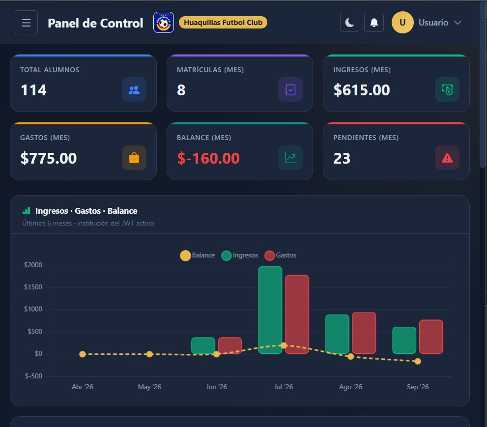
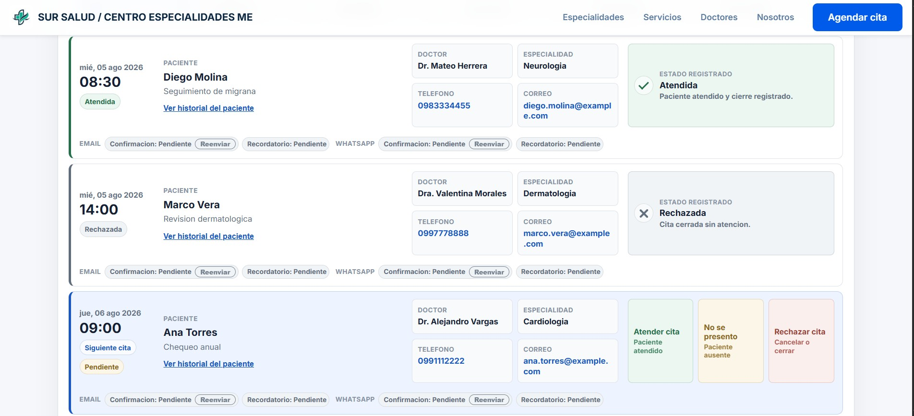
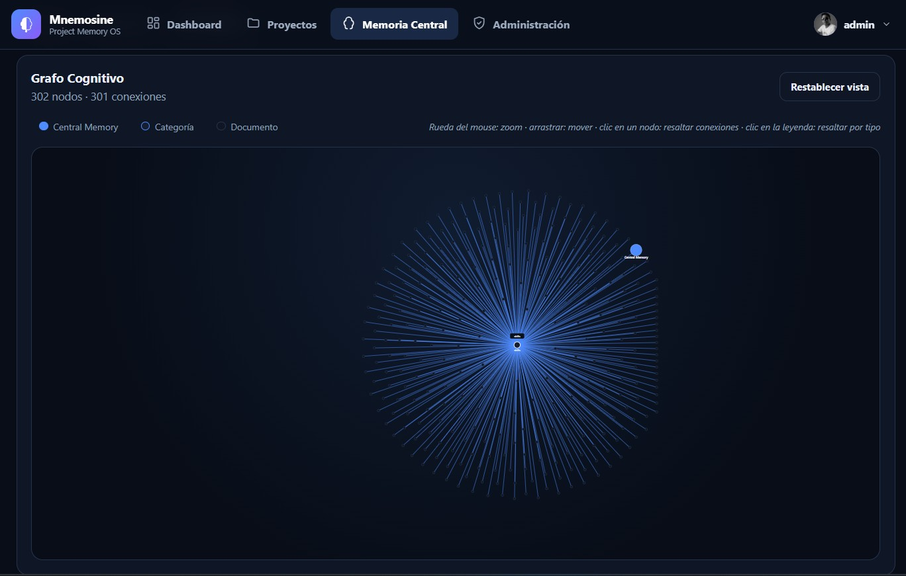

Interfaces modernas
Experiencias web responsive, componentes reutilizables, interacción y usabilidad.
AngularHTML5CSS3JavaScript
MACHALA · ECUADOR
Soy Jhonny Miñan, desarrollador Full Stack con experiencia en aplicaciones web, APIs, microservicios e Inteligencia Artificial. Mi trayectoria también nace del soporte técnico, hardware, redes y atención al cliente.
<build />Ideas → productoPERFIL
Más que código
Mi experiencia combina desarrollo de software con una base práctica en infraestructura informática. He trabajado desarrollando aplicaciones, analizando sistemas, administrando redes y servidores, manteniendo equipos y atendiendo necesidades tecnológicas de usuarios y empresas.
También he participado en ventas de equipos y accesorios informáticos, gestión de garantías y atención comercial.
STACK & CAPACIDADES
Tecnología
Frontend, backend, datos, IA, infraestructura y negocio.
Experiencias web responsive, componentes reutilizables, interacción y usabilidad.
Aplicaciones empresariales, lógica de negocio, integraciones y servicios escalables.
Persistencia relacional y NoSQL, caché y estructuras orientadas al producto.
IA aplicada, automatización y agentes para conectar capacidades inteligentes con procesos.
Diagnóstico, mantenimiento, redes, servidores y soporte informático.
Venta de equipos, garantías, atención y comprensión de necesidades empresariales.
EXPERIENCIA
Recorrido
Una evolución que conecta operación, infraestructura, desarrollo y producto.
Spring Boot, Asterisk y Agent AI.
PHP, Java, JavaScript y frameworks.
Java, .NET, PHP, HTML5, JavaScript, CSS3, Python y Node.js.
Reparación, instalación y mantenimiento de equipos informáticos.
Mantenimiento, gestión técnica, venta de equipos, accesorios y garantías.
De técnico auxiliar a técnico jefe y encargado del departamento de informática.
PROYECTOS
Trabajo

Sistema de control educativo para clases, pagos, estudiantes y docentes.

Plataforma administrativa para gestión de procesos clínicos y operación empresarial.

Memoria central determinista para proyectos construidos por agentes de IA: el estado compartido que conecta lo que hace cada agente.
FORMACIÓN
Formación académica que acompaña la experiencia práctica.
05 / CONTACTO
Desarrollo Full Stack, automatización, IA, hardware o una mirada técnica integral.
jhonnyminian@gmail.com ↗